“The season” in Palm Springs starts in early January with the highly regarded Palm Springs International Film Festival. February’s Modernism Week welcomes 100,000+ architecture buffs from around the world (me included) and the Rancho Mirage Writers Festival hosts a world-class gathering of writers, thinkers and people contributing to the intellectual vitality of our times. In March, things really get rolling. Tennis enthusiasts get front-row seats at the two-week BNP Paribas Open in neighboring Indian Wells, opera lovers can enjoy Opera in the Park in downtown Palm Springs, foodies can indulge at the Palm Desert Food & Wine Festival, and fashionistas can attend the West Coast’s largest fashion week on El Paseo in Palm Desert. The action continues in April, with the Coachella and Stagecoach music festivals attracting tens of thousands of screaming fans at the Empire Polo Club in nearby Indio.
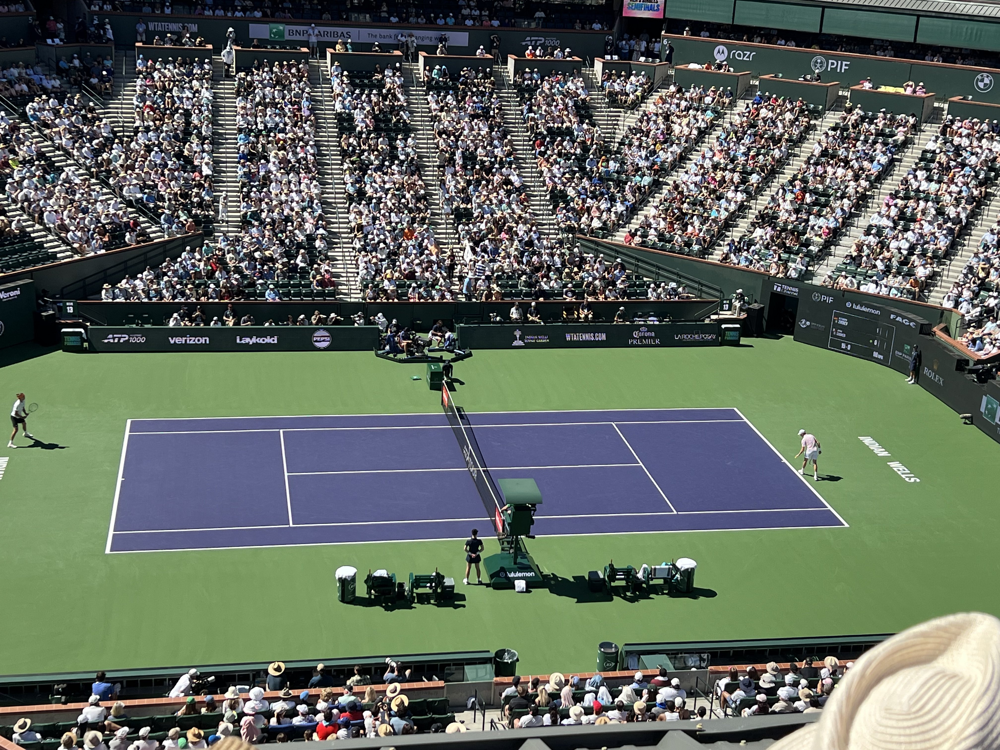
While the summer temperatures temper outdoor activities, things pick up again in the fall. A “mini” Modernism Week prepares attendees for the big show the following spring and Desert X kicks off its world-renowned bi-annual art installation in October, which is on display through the following May.
The spirit in Palm Springs is intoxicating. Each day starts with the bluest sky, the tall shimmering palm trees and the orange-hued San Jacinto mountains. There are many shops and restaurants to explore. Here are just a few of my favorite things!
Topping the list would be Modernism Week, which allows visitors to explore the area’s iconic midcentury modern homes — many of which are owned by past and present Chicagoans. There’s also a midcentury modern garden tour and multiple architecture and design lectures at the Annenberg Theater in the lovely Palm Springs Art Museum, which was designed by E. Stewart Williams in 1976. Last year, Chicagoan Jeanne Gang was the featured speaker and she started her talk by saying we should not forget that we are here on sacred ground and as we appreciate the architecture of the desert today, we must also honor the land of the Agua Caliente Band of Cahuilla Indians who called this area home for thousands of years before.
This year, Nelda Linsk was one of the featured speakers. She and her art dealer husband, Joe, moved to the desert many years ago and owned the iconic Kaufmann Residence, designed by Richard Neutra. She is well known as one of the models in “Poolside Gossip,” a famous 1970 photograph by George “Slim” Aarons who was known as highlighting “attractive people doing attractive things in attractive places.” Nelda and her friends in Poolside Gossip truly capture the spirit of this special place.
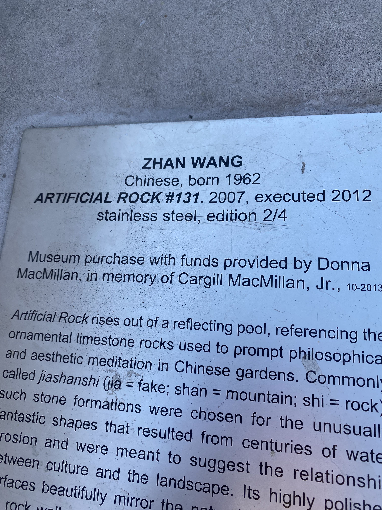
The Palm Springs Art Museum is another favorite of mine. On its lower level, it is currently displaying a wonderful collection of Bob Mackie gowns and sketches. Bob, whom I’ve met on several occasions, is a Palm Springs local and still full of flair. Livs Palm Springs is a cheery café, known for its artful and delicious brunches on offer in the museum’s sculpture garden. The museum is now also home to The Aluminaire House, a three-story home designed as a case study by architects A. Lawrence Kocher and Albert Frey in 1931, as well as the mid-century Architecture and Design Center — a former home of Palm Springs’ Santa Fe Savings & Loan.
Then there’s the monthly Art Walk at the Backstreet Art District. I love exploring this vibrant community of artist studios, galleries and art-related businesses and stumbling upon new works by local, regional and national artists. One of my new favorites is Fernando Ramirez.
Walking along Palm Canyon Drive is always a treat. There are so many shops with unique and beautiful collections. Super Simple is one of my new finds. The owner, James Fernandez, is just so charming! Currently, Super Simple is presenting the fourth iteration of “Woven Together,” an art exhibition celebrating the late photographer Fernando Bengoechea, who many may remember as our own Nate Berkus’s late partner. Fernando’s extraordinary legacy of woven photographs has now been reimagined by his brother Marcelo.
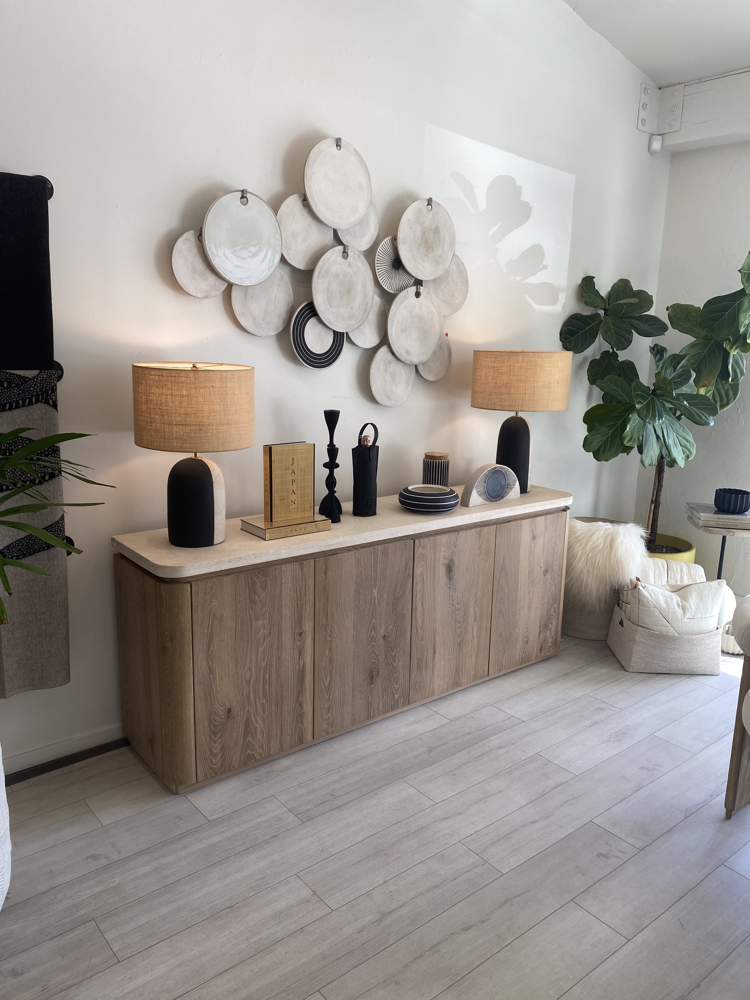
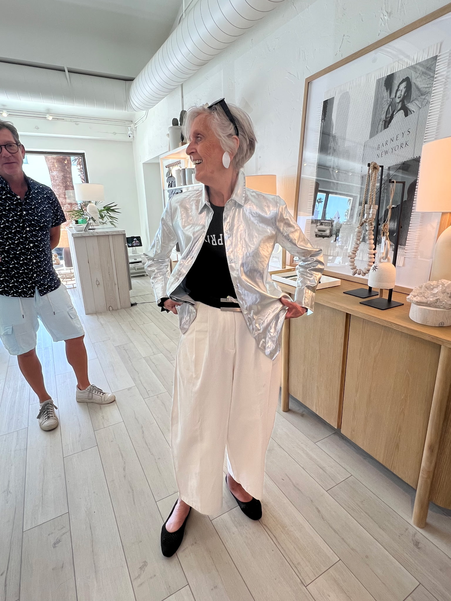
The Webster is a relatively new addition to the shopping scene on Palm Canyon Drive. The high-end boutique is housed in the former office location of Arthur Elrod, an interior designer who left his inimitable mark in homes across southern California. Close by is the boutique of local designer Trina Turk. The colors of her fabrics are extraordinary. And her caftans are true Palm Springs staples! Finally, Pimlico Place is another favorite destination for international contemporary and vintage accessories.
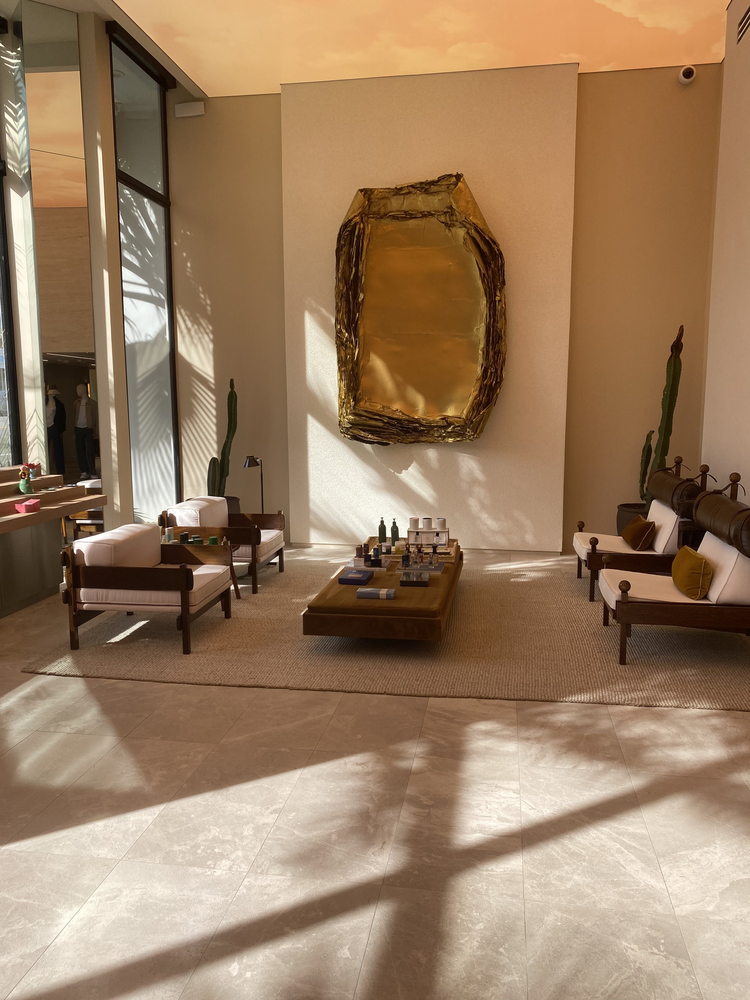
When it comes to dining, Palm Springs also has too many wonderful restaurants and cafés to count. Spencer’s, with its four-star American cuisine, is legendary. Another “must” is Café Mon Amour, a slice of Paris in the desert. Its owners, Sabrina and Edward, are from Normandy. Finally, everyone is raving about Peninsula Pastries, another French café helmed by baker Christophe and his wife Helene Meyer. Their baguettes are exceptional.
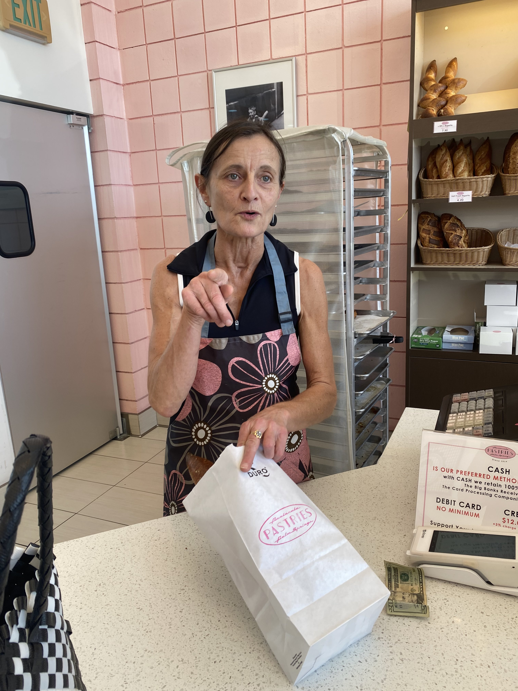
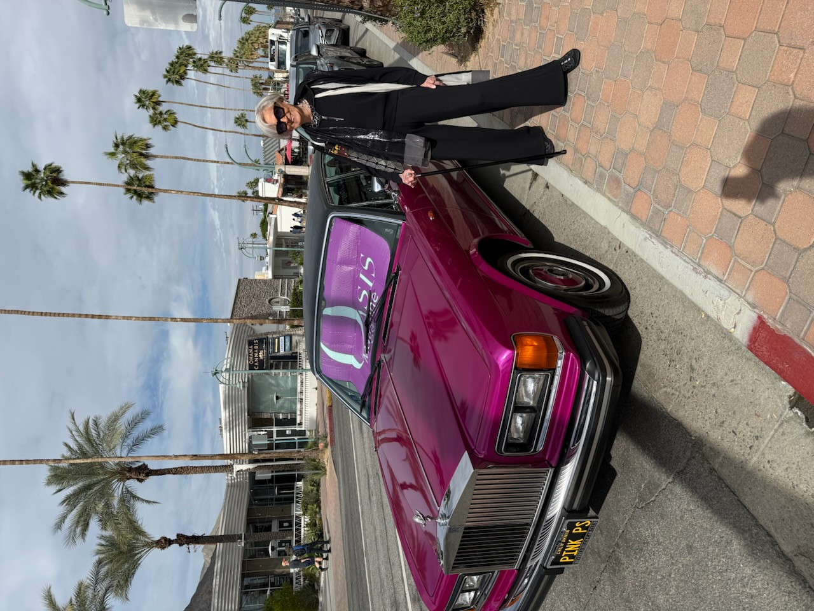
You really can find anything your heart desires on Palm Canyon Drive. This includes my new hairstylist, Kristina, who is from Copenhagen!
These are just a few of my favorite things. But perhaps my most favorite is my home away from home here. I have been lucky enough to stay in Casa Verde for the past 11 years with owners Michael Martinez and Nick Williams (and their handsome dog, Benny, who greets me enthusiastically every time I arrive). It really is like coming home. It is my favorite place. And to quote another desert resident, Walt Disney, it’s my “happiest place on earth.”
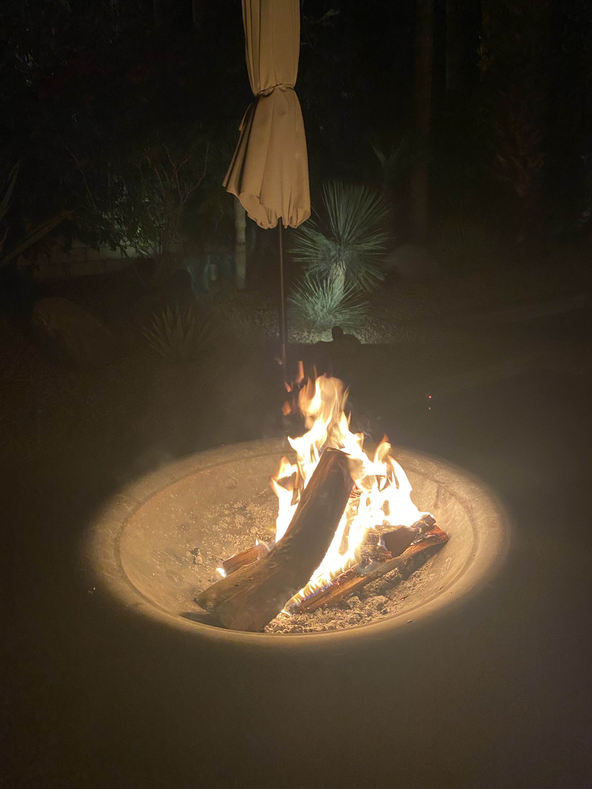
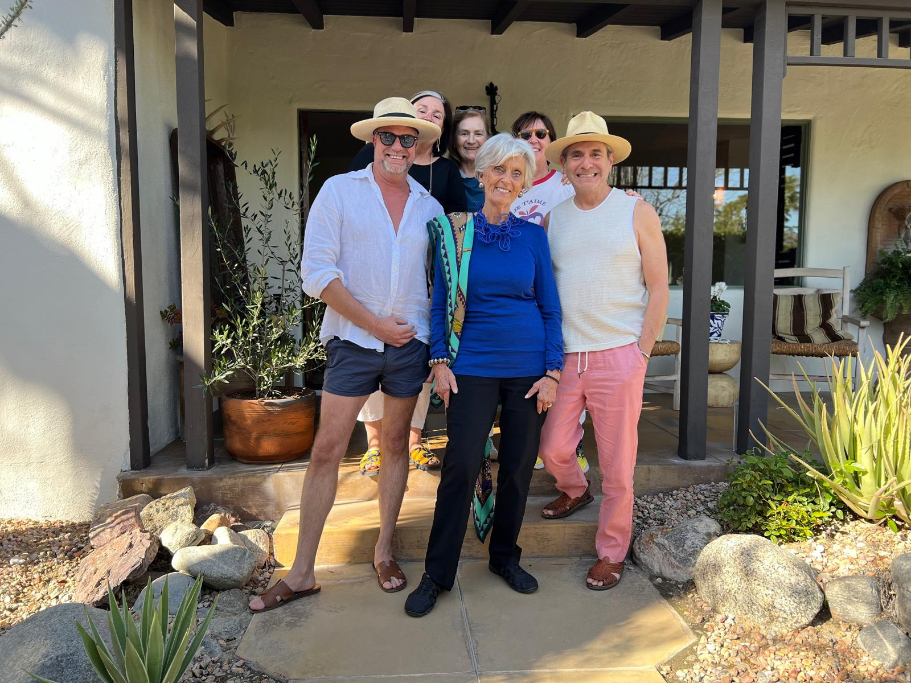
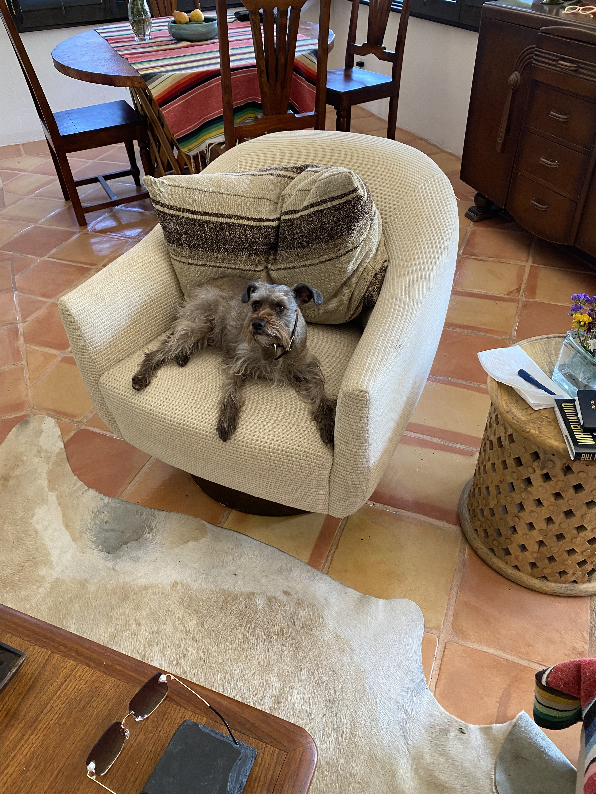
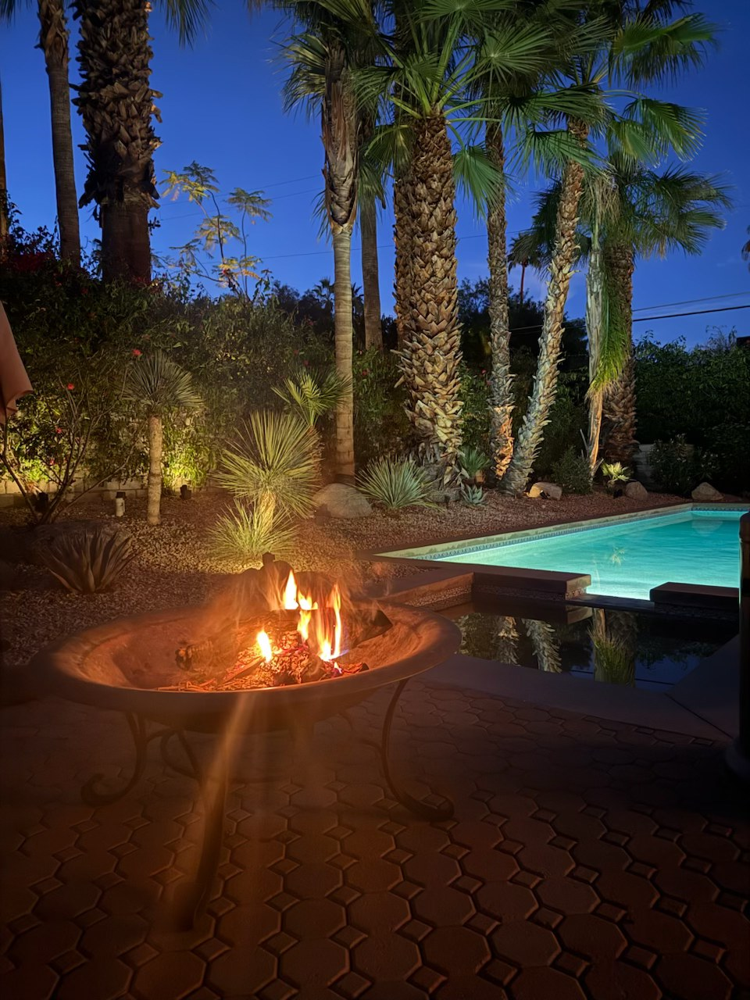
Next month, I’ll write about my favorite people and personalities in Palm Springs and they will share their favorite things!